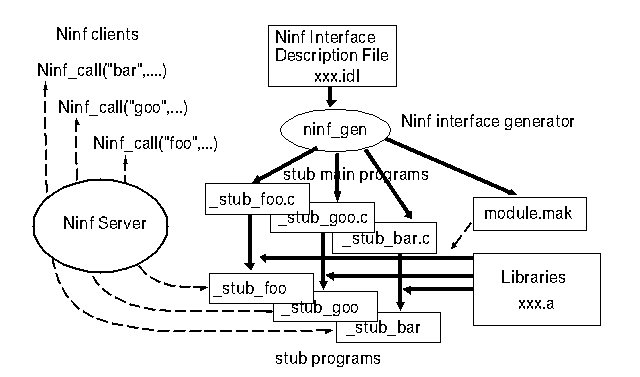

 <center> <H1> Interface generator </H1> </center> <hr noshade width = 80% algn = "center"> <H2>
Ninf IDL $B$N5-=R$+$i%$%s%?!<%U%'%$%9>pJs$rFbB"$7$?%9%?%V%W%m%0%i%`$r:n@.(B<br>

Ninf IDL $B$NNc(B:
<table>
<td>
<h3>
<PRE>
Define mmul(long mode_in n, 
	  double mode_in A[n][n], 
          double mode_in B[n][n],
          double mode_out C[n][n])
Required "sample.o"
Calls "C" mmul(n,A,B,C);
</pre>
</td>
<td>

</td>
</table>
 <hr> <center><table><td><h2>$B!!!!!!!!!!!!!!!!!!!!!!!!!!!!!!(B</td><td></td><td></td><td><h2><em>$B!!!!!!!!!!!!!!(BHOKKE' 96 </td></table></center>


